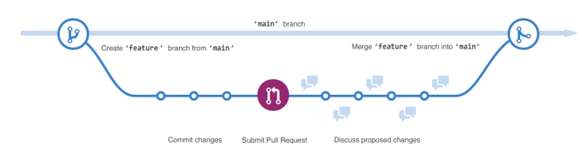
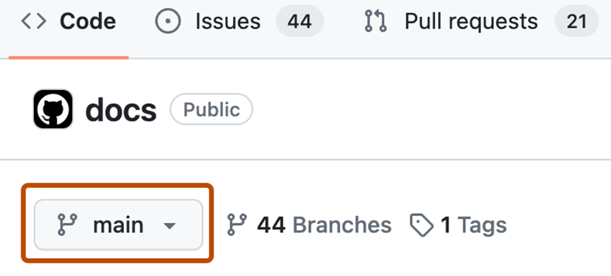
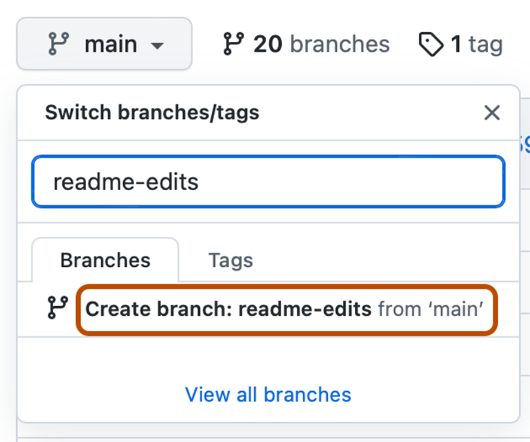
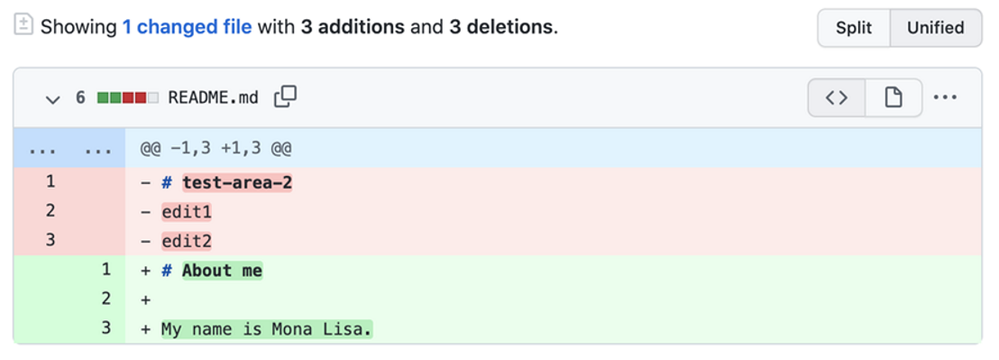

UD0 - Actividades Extra GitHub - Enunciados
Pulsa aquí para visualizar: UD0 - Actividades Extra GitHub - Enunciados
UD 1
UF2216. UD1. Enunciado y documentación (I).
Algunos me habéis contactado con dudas concretas al intentar resolver la primera actividad.
Antes de poneros con ella, os recomiendo encarecidamente que sigáis este tutorial sobre generalidades de Git y GitHub y cómo crear una cuenta y acceder:
https://docs.github.com/es/get-started/start-your-journey
Cuando lo hayáis visto, entendido y revisado, podéis realizar la actividad ayudándoos de más documentación.
Enunciado (Descripción)
En el siguiente supuesto práctico, realizar las funciones de creación de repositorio para cubrir las necesidades de gestión de información, de acuerdo al siguiente diseño:
Se quiere disponer de un mecanismo de almacenamiento de los elementos a gestionar en una empresa, con posibilidad de realizar cambios sobre los elementos almacenados y un registro histórico de las acciones realizadas con cada elemento o conjunto de elementos.
Los elementos a gestionar son archivos de texto, con distintos formatos.
También pueden ser documentos electrónicos o físicos, los documentos electrónicos contienen la URL de acceso al recurso junto con el usuario y contraseña para acceder a su contenido.
Dichos documentos, tratan de manuales y documentación de programas y tecnología informática, es deseable que se separen por ámbitos.
Pregunta 1. Instalar GitHub en vuestro ordenador y crear una cuenta, que usaréis durante toda la unidad formativa.
Para esta parte, os recomiendo las siguientes guías paso a paso:
https://docs.github.com/es/get-started/start-your-journey/about-github-and-git
https://docs.github.com/es/get-started/start-your-journey/creating-an-account-on-github
Pregunta 2. Crear un repositorio que solucione las necesidades de gestión de la actividad propuesta.
Para esta parte, os recomiendo la siguiente guía paso a paso:
https://docs.github.com/es/repositories/creating-and-managing-repositories/creating-a-new-repository
https://docs.github.com/es/repositories/working-with-files/managing-files/creating-new-files
IMPORTANTE: para adaptar la estructura que os dan, no os lieis creando ramas para cada nivel, en su lugar, os recomiendo que lo encaréis como si estuvierais creando una estructura de carpetas y subcarpetas en cualquier directorio de vuestro ordenador.
PISTA: el nivel más alto es el repositorio. Para cada nivel, cread una carpeta dentro, con su nombre correspondiente, y dentro de cada una, las subcarpetas que necesitéis.
Pregunta 3. Definir y explicar estructura organizativa. Simplemente explicadme cómo habéis definido lo anterior.
Formato de entrega: tenéis que entregar el link del repositorio, por ejemplo:
https://github.com/nombreusuario
UD 2
UF2216. UD2. Enunciado y documentación (II).
En la actividad anterior habéis creado una cuenta en GitHub y habéis creado un repositorio, con algunas carpetas dentro.
Partiendo de esto, seguimos con el siguiente paso, que consiste en crear una rama, para lo cual necesitamos estamos prerrequisitos:
- Debes tener una cuenta de GitHub. Para obtener más información, consulta: Crear una cuenta en GitHub
- No es necesario saber cómo codificar, usar la línea de comandos o instalar Git (el software de control de versiones en el que se basa GitHub). Aprender Git en línea de comandos sería una fase más avanzada que no vamos a ver en este módulo.
La bifurcación permite tener diferentes versiones de un repositorio a la vez.
De forma predeterminada, el repositorio tiene una rama denominada main que se considera la rama definitiva. Puedes crear ramas adicionales fuera de main en el repositorio.
La bifurcación es útil cuando se desea agregar nuevas características a un proyecto sin cambiar la fuente principal del código. El trabajo realizado en diferentes ramas no se mostrará en la rama principal hasta que se fusione, lo que haremos en una actividad posterior.
Podemos usar ramas para hacer pruebas antes de confirmarlas en main.
Cuando creas una rama a partir de la rama principal, estás haciendo una copia, de la rama principal tal y como estaba en ese momento. Si otra persona realizó cambios en la rama principal mientras trabajaba en su rama, puede extraer esas actualizaciones.
Este diagrama muestra:
- La rama principal
- Una nueva rama llamada feature
- El recorrido que realiza esa función antes de fusionarse con la función principal

- Haz clic en la pestaña Código del repositorio que tienes creado.
- Encima de la lista de archivos, haz clic en el menú desplegable que dice main.

- Escribe un nombre de rama, readme-edits, en el cuadro de texto.
- Haga clic en Crear rama: readme-edits desde main.

Ahora tienes dos ramas, main y readme-edits. En este momento, son exactamente iguales.
En la siguiente actividad, añadiremos cambios a la nueva rama readme-edits.
Formato de entrega: tenéis que entregar el link del repositorio, por ejemplo:
https://github.com/nombreusuario
UD 3
UF2216. UD3. Enunciado y documentación (III).
Continuamos con la actividad que empezamos en la unidad anterior.
Ahora que ya tenéis vuestra rama principal, main, y una rama nueva, readme-edits, vamos a confirmar y a realizar cambios.
Cuando creaste una nueva rama en el paso anterior, GitHub te llevó a la página de códigos de tu nueva rama readme-edits, que es una copia de main.
Podemos realizar y guardar cambios en los archivos del repositorio. En GitHub, los cambios guardados se denominan commits (confirmaciones). Cada confirmación tiene un mensaje de confirmación asociado, que es una descripción que explica por qué se realizó un cambio en particular. Los mensajes de confirmación capturan el historial de los cambios para que otros colaboradores puedan entender lo que has hecho y por qué.
Pasos para la actividad:
- En la rama readme-edits que creaste, haz clic en el archivo README.md.
- Para editar el archivo, haz clic sobre el lapicero (que es para editar).
- En el editor, escribe un poco sobre ti, por ejemplo, tu nombre, e escribe "Actividad 3".
- Haz clic en Commit changes (Confirmar cambios...).
- En el cuadro "Commit changes (Confirmar cambios)", escribe un mensaje de confirmación que describa los cambios. Pon, por ejemplo, "Haciendo cambios".
- Haz clic en Commit changes (Confirmar cambios).
Estos cambios se realizarán solo en el archivo README de la rama readme-edits, por lo que ahora esta rama contiene contenido diferente del principal.
En la siguiente actividad lo veremos con mayor profundidad.
Formato de entrega: tenéis que entregar el link del repositorio, por ejemplo:
https://github.com/nombreusuario
UD 4
UF2216. UD4. Enunciado y documentación (IV).
En esta cuarta actividad vamos a ver un tema de suma importancia, que podríamos llamar "Abrir una solicitud de incorporación de cambios".
Al final, este concepto se conoce como "pull request", y así lo llamamos incluso en español.
Viniendo de la actividad anterior, ahora que tenemos cambios en una rama fuera de main, podemos hacer una "pull request" o solicitud de extracción.
Las pull request son la base de la colaboración en GitHub. Cuando abrimos una pull request, estamos solicitando que alguien revise los cambios que hemos propuesto y extraiga nuestra contribución y los fusione en su rama.
Las pull request muestran diferencias del contenido entre la rama main y la rama en la que estamos trabajando. Los cambios, sumas y restas se muestran en diferentes colores (lo muestro en una imagen posteriormente).
En esta actividad, tienes que crear una pull request en tu propio repositorio, siguiendo estos pasos:
1. Haz clic en la pestaña pull requests del repositorio con el que estás haciendo la actividad.
2. Haz clic en New pull reques.
3. En el cuadro "Example comparisons" (comparaciones de ejemplo), selecciona la rama quecreaste en la actividad anterior, readme-edits, para compararla con main (la original).
4. Revisa los cambios en las diferencias de la página Comparar, asegúrate de que son lo que quieres enviar.

5. Haz clic en "Create pull request" (Crear solicitud de extracción).
6. Dale un título a tu solicitud y escribe una breve descripción de los cambios. Puedes incluir emojis y arrastrar y soltar imágenes y gifs.
7. Haz clic en Create pull request.
Revisión de una solicitud de incorporación de cambios
Cuando comienzas a colaborar con otros, este es el momento en que pedirías su revisión. Esto permite a tus colaboradores comentar o proponer cambios en tu solicitud de incorporación de cambios antes de fusionar los cambios en la rama principal.
No cubriremos la revisión de las solicitudes de incorporación de cambios en este tutorial, pero si quieres profundizar más, consulta Acerca de las revisiones de solicitudes de incorporación de cambios.
Formato de entrega: tenéis que entregar el link del repositorio, por ejemplo:
https://github.com/nombreusuario
UD 5
Llegamos a la última actividad, en la que realizaremos el este paso final, que consiste en fusionar la rama readme-edits en la rama principal main.
Después de fusionar las ramas (lo que se conoce como merge), los cambios en la rama readme-edits se incorporarán a main.
A veces, una pull request puede introducir cambios en el código que entren en conflicto con el código existente en main. Si hay algún conflicto, GitHub te alertará sobre el código en conflicto y evitará la fusión hasta que se resuelvan los conflictos.
Puedes hacer una confirmación que resuelva los conflictos o usar comentarios en la solicitud de incorporación de cambios para discutir los conflictos con los miembros del equipo.
En esta actividad no debería haber ningún conflicto, por lo que estamos listos para fusionar la rama en la rama principal.
- En la parte inferior de la pull request (solicitud de extracción), haz clic en "merge" (fusionar solicitud de incorporación de cambios) para fusionar los cambios en la principal (main).
- Haz clic en Confirm merge (confirmar fusión). Recibirás un mensaje que indica que la solicitud se fusionó correctamente y que se cerró.
- Haga clic en "Delete branch" (eliminar rama). Ahora que la pull reques se ha fusionado y los cambios están en main, puedes eliminar de forma segura la rama readme-edits. Si deseas realizar más cambios en el proyecto, siempre puedes crear una nueva rama y repetir este proceso.
- Vuelve a hacer clic en la pestaña Código de tu repositorio para ver los cambios publicados en main.
Formato de entrega: tenéis que entregar el link del repositorio, por ejemplo:
https://github.com/nombreusuario